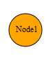

The steps to add the node
using DiagramPropertiesModel are as follows:
2. Add the following code in the FlatDiagram.aspx file to create the diagram control in the View.
|
View
<%{ Html.Syncfusion().Diagram("FlatDiagram") .Width(Unit.Pixel(1100)) .Height(Unit.Pixel(500)) .Render(); } %> |
3. In the controller, add the Syncfusion.Mvc.Diagram and Syncfusion.Mvc.Shared namespaces.
|
Controller using Syncfusion.Mvc.Diagram; using Syncfusion.Mvc.Shared;
|
4. Create a DiagramPropertiesModel above the FlatDiagram method and add the following code into the controller page.
|
Controller
DiagramPropertiesModel model = new DiagramPropertiesModel(); public ActionResult FlatDiagram() { Node node1 = AddNode("Node1", "Node1", 225, 100, Shapes.Ellipse, 50.00, 50.00, null, 1); model.Nodes = new NodesCollection() { node1 }; model.Width = Unit.Pixel(1100); model.Height = Unit.Pixel(500); model.DiagramMode = DiagramMode.SVG; ViewData["FlatDiagram"] = model; return View(); } public Node AddNode(string name, string label, double offsetX, double offsetY, Shapes shape, double width, double height, string bgColor, double bWidth) { Node node = new Node() { Name = name, Label = label, LabelHorizontalAlignment = Horizontal.Center, LabelVerticalAlignment = Vertical.Middle, OffsetX = offsetX, OffsetY = offsetY, Shape = shape, Height = height, Width = width, BackgroundColor ="orange", BorderColor = "black", BorderWidth = bWidth, LabelFontColor = "black", LabelFontSize = 12, LabelFontFamily = "Times New Roman }; return node; } |
Note: If you want to create the diagram in the Canvas mode, change the DiagramMode to Canvas. By default the diagram is rendered in the SVG mode.
5. Run the application. The Node will appear in the working area as shown below.

Figure 39: Node